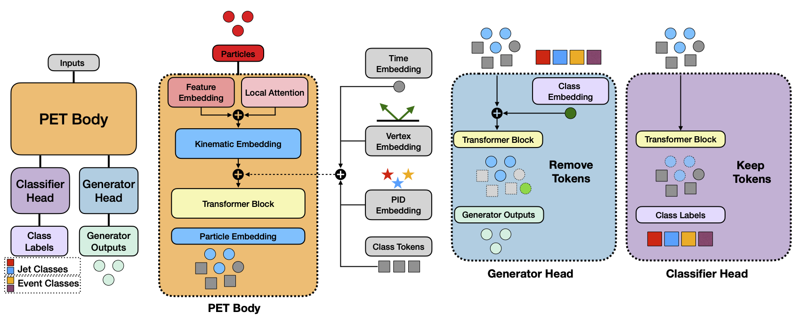

OmniLearned Model
OmniLearned is a Point Cloud Foundation Model for Jet Physics. It builds upon OmniLearn with improved architecture and is pre-trained on 1 billion jets, with all datasets accessible from the software package!

A Foundation Model Framework for All Tasks Involving Jet Physics
OmniLearned is a Point Cloud Foundation Model for Jet Physics. It builds upon OmniLearn with improved architecture and is pre-trained on 1 billion jets, with all datasets accessible from the software package!